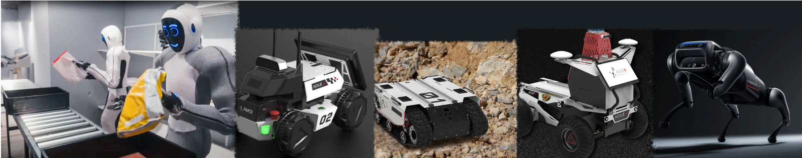
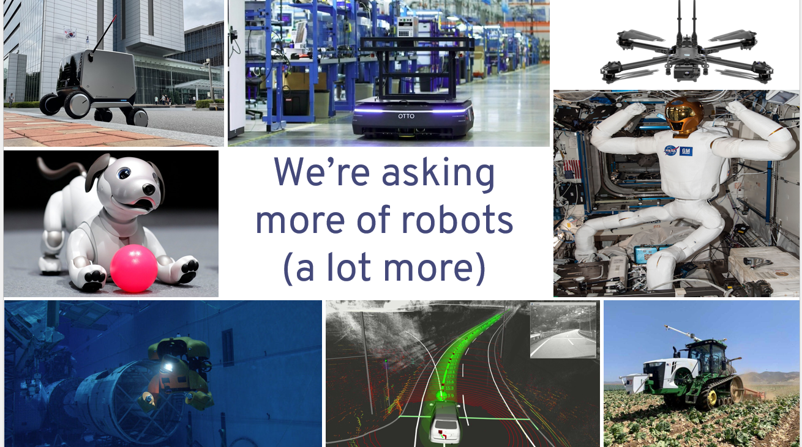
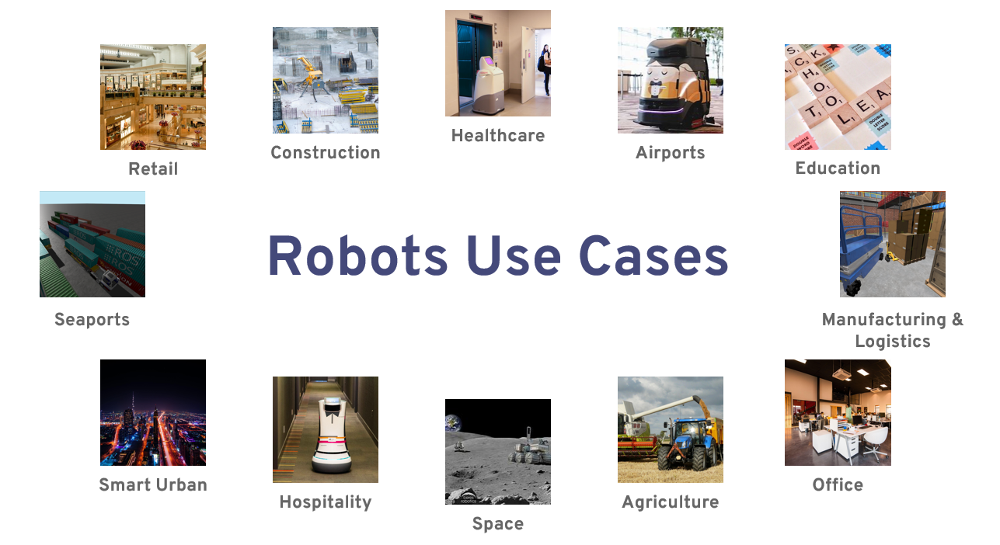
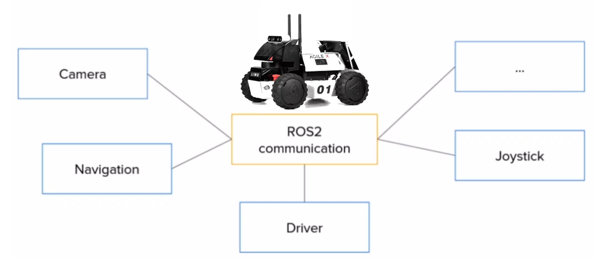
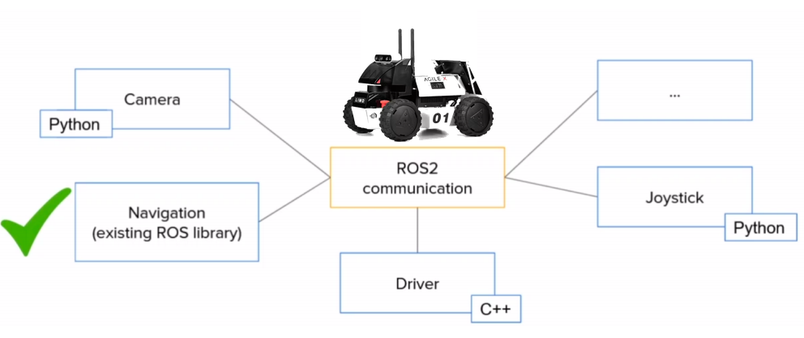
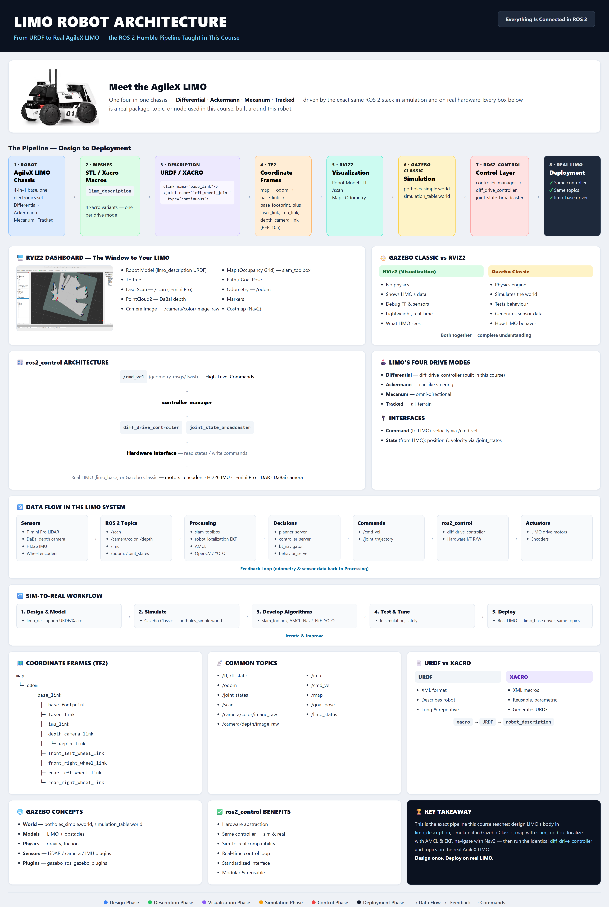

2 hours. Complete it before Lecture 1. Flip the cards 🃏, type the commands ⌨️, beat the drill ⚡


Welcome to the fantastic world of ROBOTICS!
First, you must understand what a robot is.
A robot is a programmable machine designed to carry out tasks autonomously or semi-autonomously, often resembling or imitating human or animal actions.!
Robots are equipped with various sensors, actuators, and mechanisms that enable them to perceive their environment, make decisions, and execute actions accordingly. The concept of a robot encompasses a wide range of devices, from simple industrial arms to sophisticated humanoid robots and autonomous vehicles.
Robots can be of many shapes and sizes for infinite applications and complexity. However, there are specific components that any robot MUST HAVE.
To understand it better, you will compare a robot to a human and see the components shared in a robotic form.

1.1.1 What is ROS2, when to use it, and Why?
Code separation and communication tools
Let's say, for example, you are programming a mobile robot such as the LIMO robot — you can create a program called a node for a camera, a navigation algorithm, a hardware driver, a LiDAR, a joystick, etc., as shown in Fig. 1.1. Each of those is an independent block that communicates with the others in a way that is powerful and scalable.

Tools and Plug and play libraries
There is a bundle of libraries available — you just need to clone and use that library. Secondly, you can write programs in Python and C++ simultaneously, as shown in Fig. 1.2:

A quick look at the AgileX LIMO — the four-in-one mobile robot this whole course is built around. Watch it drive before we open up its software architecture.

This is a complete, ready-to-teach robotics and ROS 2 curriculum built specifically around the AgileX LIMO — a four-in-one mobile robot that can switch between differential, Ackermann, Mecanum, and tracked drive bases on the same chassis. It merges three sources into one coherent course:
1. Conceptual depth — the concepts and terminology of the official ROS 2 documentation at docs.ros.org (Nodes → Topics → URDF → TF2 → Gazebo → Nav2 → Behavior Trees), rebuilt line-by-line around LIMO instead of a generic robot.
2. Tested lab exercises — the real, working package names, launch files, and CLI commands from a university LIMO+ROS2 module's teaching wiki, so every command in this course actually runs.
3. The official AgileX LIMO manual — Lecture 11's six-subsystem hardware deep-dive (chassis & drive modules, onboard compute, LiDAR, depth camera, IMU, battery/power) is grounded directly in AgileX's own hardware documentation.
4. A second, from-scratch build — Lectures 12-14 close the course by having you build your own ROS 2 robot ("Forge") from a bare motor and an empty microSD card, following The Construct's Build Your First ROS 2 Based Robot (FastBot) reference design end to end: real part numbers, real pin maps, real firmware, the full differential-drive driver node, a CAD-generated URDF, sensor bring-up, a Gazebo digital twin and a 3D-printed cover — applying every skill from Lectures 1-11 to hardware and design decisions that are entirely your own.
Each lecture is a self-contained session — around 3 hours for Lectures 1-11, and 4-6 hours each for the hands-on build arc in Lectures 12-14: a warm conceptual walkthrough, hands-on terminal work, real code you build and run, a learning checkpoint, and exercises. Lectures build on each other in order — work through them front to back for the full experience, or jump to any single topic you need.
Students, hobbyists, or engineers with basic Python and command-line comfort, working through a full university-style or bootcamp-style module on mobile robotics. No prior ROS or Linux experience is assumed — Lecture 1 starts from a blank Windows/Mac machine.
| Requirement | Notes |
|---|---|
| A laptop/desktop, 8GB+ RAM, 60GB+ free disk | Windows, macOS, or Linux host — Lecture 1 covers VMware Workstation Pro setup |
| Ubuntu 22.04 LTS (in a VM) | Free ISO, full install walkthrough in Lecture 1 |
| ROS 2 Humble Hawksbill | Installed in Lecture 1; used throughout |
| An AgileX LIMO robot (optional but recommended) | Lectures 1-10 work fully in Gazebo simulation; Lecture 11 is a hands-on hardware lab built around a physical LIMO |
| DIY robot parts for Lectures 12-14 (optional) | A gear motor with encoder, an H-bridge driver, a small MCU board, an SBC, a LiDAR, and a camera — every step also works as a design-only exercise without buying parts |
Lectures 1-10 are designed to run start-to-finish in Gazebo, so a classroom or self-learner never needs to wait for lab time on a physical robot. Where real hardware behaves differently — motor drivers, sensor noise, CAN bus, timing — that gap is called out explicitly throughout. Lecture 11 then puts LIMO's real electronics in your hands, subsystem by subsystem, straight from AgileX's own manual. Lectures 12-14 go a step further: you build a second robot, entirely your own, from a bare motor and an empty microSD card, applying every skill from the first eleven lectures to hardware and design decisions nobody handed you.